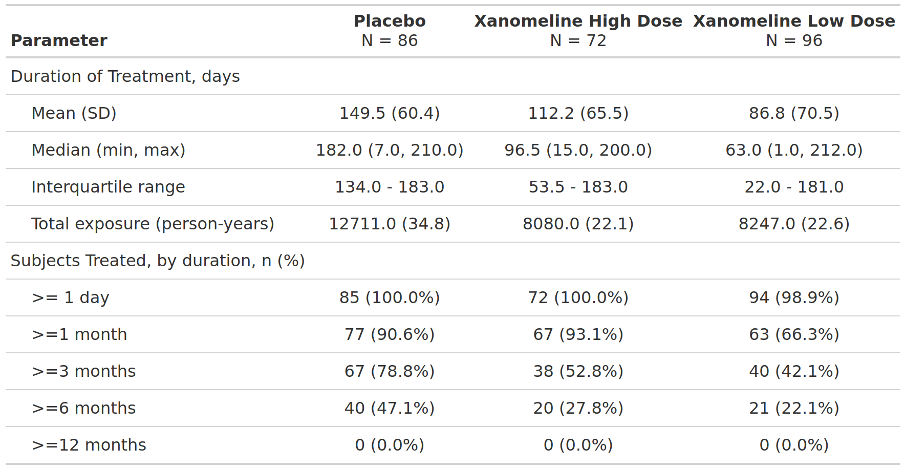

FDA Table 06
Overview of Adverse Events, Safety Population, Pooled Analyses
table
FDA
safety
adverse events
Code
# --- PART 1: Create first of four table parts (Overview of serious AEs)
# Summarize SAEs in an overall manner
sae <- saf_adae |>
filter(AESER == "Y") |> # keep only serious AEs
mutate(AESER = "SAE") # convert flag to a meaningful value
tbl_any_sae <- tbl_hierarchical(
data = sae,
denominator = adsl,
id = "USUBJID",
by = "ARM",
variables = "AESER",
label = AESER ~ "Event",
)
# Summarize SAEs per category
# This is necessary as adae usually has one extra column per SAE category
# Assign a label to each SAE category
sae_cat_vars <- list(
"SAEs with fatal outcome" = "AESDTH",
"Life-threatening SAEs" = "AESLIFE",
"SAEs requiring hospitalization" = "AESHOSP",
"SAEs resulting in substantial disruption of normal life functions" = "AESDISAB",
"Congenital anomaly or birth defect" = "AESCONG",
"Other" = "AESMIE"
)
tbl_sae_cat_list <- mapply(function(categ, label) { # allows to apply per category
data <- sae |>
filter(.data[[categ]] == "Y") |>
mutate(
!!categ := label # convert flag to a meaningful value
)
tbl_hierarchical( # calculate rates
data = data,
denominator = adsl,
id = "USUBJID",
by = "ARM",
variables = all_of(categ),
statistic = ~"{n} ({p}%)",
label = all_of(categ) ~ "Event"
)
}, categ = sae_cat_vars, label = names(sae_cat_vars), SIMPLIFY = FALSE)
# Put first part together
tbl_sae <- append(list(tbl_any_sae), tbl_sae_cat_list) |>
tbl_stack() |>
modify_column_indent("label", rows = variable %in% sae_cat_vars)Warning: `modify_column_indent()` was deprecated in gtsummary 2.3.0.
ℹ Please use `modify_indent()` instead.Code
# --- PART 2: Create second of four table parts (Permanent discontinuation)
disc_ae <- adae |>
filter(AEACNOTH == "SUBJECT DISCONTINUED FROM STUDY") |>
mutate(
# convert label to a more meaningful value
AEACNOTH = "AE leading to permanent discontinuation of study drug"
)
tbl_disc_ae <- tbl_hierarchical( # calculate rates
data = disc_ae,
denominator = adsl,
id = "USUBJID",
by = "ARM",
variables = "AEACNOTH",
label = AEACNOTH ~ "Event",
statistic = ~"{n} ({p}%)"
)
# -- PART 3: Create third of four table parts (Dose modification)
dose_mod_ae <- adae |>
filter(AEACN %in% c("DRUG INTERRUPTED", "DOSE REDUCED", "DOSE RATE REDUCED", "DOSE INCREASED")) |>
mutate(
AEACN = case_when( # convert to meaningful labels
AEACN == "DRUG INTERRUPTED" ~ "AE leading to interruption of study drug",
AEACN == "DOSE REDUCED" ~ "AE leading to reduction of study drug",
AEACN == "DOSE RATE REDUCED" ~ "AE leading to dose delay of study drug",
AEACN == "DOSE INCREASED" ~ "Other",
.default = "Other"
)
)
tbl_dose_mod_ae <- tbl_hierarchical( # calculate rates
data = dose_mod_ae,
denominator = adsl,
id = "USUBJID",
by = "ARM",
variables = "AEACN",
label = list(
AEACN ~ "Event",
# Specify overall label
..ard_hierarchical_overall.. = "AE leading to dose modification of study drug"
),
statistic = ~"{n} ({p}%)",
overall_row = TRUE
)
# -- PART 4: Create fourth of four table parts (Any AE)
tbl_any_ae <- tbl_hierarchical(
data = adae,
denominator = adsl,
id = "USUBJID",
by = "ARM",
variables = "AESEV",
label = list(AESEV ~ "Event", ..ard_hierarchical_overall.. = "Any AE"),
statistic = ~"{n} ({p}%)",
overall_row = TRUE
)
# Put it all together
tbl6 <- list(tbl_sae, tbl_disc_ae, tbl_dose_mod_ae, tbl_any_ae) |>
tbl_stack() |>
modify_column_indent("label", rows = !(variable %in% c("..ard_hierarchical_overall..", "AESER", "AEACNOTH")))
tbl6[[1]]
[[1]][[1]]
[[1]][[1]]$tbl_hierarchical{cards} data frame: 18 x 13 group1 group1_level variable variable_level context stat_name stat_label stat stat_fmt fmt_fun warning error gts_column
1 <NA> ARM A: Drug X categori… n n 134 134 0 stat_1
2 <NA> ARM A: Drug X categori… N N 400 400 0 stat_1
3 <NA> ARM A: Drug X categori… p % 0.335 33.5 <fn> stat_1
4 <NA> ARM B: Place… categori… n n 134 134 0 stat_2
5 <NA> ARM B: Place… categori… N N 400 400 0 stat_2
6 <NA> ARM B: Place… categori… p % 0.335 33.5 <fn> stat_2
7 <NA> ARM C: Combi… categori… n n 132 132 0 stat_3
8 <NA> ARM C: Combi… categori… N N 400 400 0 stat_3
9 <NA> ARM C: Combi… categori… p % 0.33 33.0 <fn> stat_3
10 ARM A: Drug X AESER SAE hierarch… n n 104 104 <fn> stat_1
11 ARM A: Drug X AESER SAE hierarch… N N 134 134 <fn> stat_1
12 ARM A: Drug X AESER SAE hierarch… p % 0.776 78 <fn> stat_1
13 ARM B: Place… AESER SAE hierarch… n n 101 101 <fn> stat_2
14 ARM B: Place… AESER SAE hierarch… N N 134 134 <fn> stat_2
15 ARM B: Place… AESER SAE hierarch… p % 0.754 75 <fn> stat_2
16 ARM C: Combi… AESER SAE hierarch… n n 99 99 <fn> stat_3
17 ARM C: Combi… AESER SAE hierarch… N N 132 132 <fn> stat_3
18 ARM C: Combi… AESER SAE hierarch… p % 0.75 75 <fn> stat_3
[[1]]$`SAEs with fatal outcome`
[[1]]$`SAEs with fatal outcome`$tbl_hierarchical{cards} data frame: 18 x 13 group1 group1_level variable variable_level context stat_name stat_label stat stat_fmt fmt_fun warning error gts_column
1 <NA> ARM A: Drug X categori… n n 134 134 0 stat_1
2 <NA> ARM A: Drug X categori… N N 400 400 0 stat_1
3 <NA> ARM A: Drug X categori… p % 0.335 33.5 <fn> stat_1
4 <NA> ARM B: Place… categori… n n 134 134 0 stat_2
5 <NA> ARM B: Place… categori… N N 400 400 0 stat_2
6 <NA> ARM B: Place… categori… p % 0.335 33.5 <fn> stat_2
7 <NA> ARM C: Combi… categori… n n 132 132 0 stat_3
8 <NA> ARM C: Combi… categori… N N 400 400 0 stat_3
9 <NA> ARM C: Combi… categori… p % 0.33 33.0 <fn> stat_3
10 ARM A: Drug X AESDTH SAEs wit… hierarch… n n 76 76 <fn> stat_1
11 ARM A: Drug X AESDTH SAEs wit… hierarch… N N 134 134 <fn> stat_1
12 ARM A: Drug X AESDTH SAEs wit… hierarch… p % 0.567 57 <fn> stat_1
13 ARM B: Place… AESDTH SAEs wit… hierarch… n n 70 70 <fn> stat_2
14 ARM B: Place… AESDTH SAEs wit… hierarch… N N 134 134 <fn> stat_2
15 ARM B: Place… AESDTH SAEs wit… hierarch… p % 0.522 52 <fn> stat_2
16 ARM C: Combi… AESDTH SAEs wit… hierarch… n n 75 75 <fn> stat_3
17 ARM C: Combi… AESDTH SAEs wit… hierarch… N N 132 132 <fn> stat_3
18 ARM C: Combi… AESDTH SAEs wit… hierarch… p % 0.568 57 <fn> stat_3
[[1]]$`Life-threatening SAEs`
[[1]]$`Life-threatening SAEs`$tbl_hierarchical{cards} data frame: 18 x 13 group1 group1_level variable variable_level context stat_name stat_label stat stat_fmt fmt_fun warning error gts_column
1 <NA> ARM A: Drug X categori… n n 134 134 0 stat_1
2 <NA> ARM A: Drug X categori… N N 400 400 0 stat_1
3 <NA> ARM A: Drug X categori… p % 0.335 33.5 <fn> stat_1
4 <NA> ARM B: Place… categori… n n 134 134 0 stat_2
5 <NA> ARM B: Place… categori… N N 400 400 0 stat_2
6 <NA> ARM B: Place… categori… p % 0.335 33.5 <fn> stat_2
7 <NA> ARM C: Combi… categori… n n 132 132 0 stat_3
8 <NA> ARM C: Combi… categori… N N 400 400 0 stat_3
9 <NA> ARM C: Combi… categori… p % 0.33 33.0 <fn> stat_3
10 ARM A: Drug X AESLIFE Life-thr… hierarch… n n 9 9 <fn> stat_1
11 ARM A: Drug X AESLIFE Life-thr… hierarch… N N 134 134 <fn> stat_1
12 ARM A: Drug X AESLIFE Life-thr… hierarch… p % 0.067 6.7 <fn> stat_1
13 ARM B: Place… AESLIFE Life-thr… hierarch… n n 13 13 <fn> stat_2
14 ARM B: Place… AESLIFE Life-thr… hierarch… N N 134 134 <fn> stat_2
15 ARM B: Place… AESLIFE Life-thr… hierarch… p % 0.097 9.7 <fn> stat_2
16 ARM C: Combi… AESLIFE Life-thr… hierarch… n n 19 19 <fn> stat_3
17 ARM C: Combi… AESLIFE Life-thr… hierarch… N N 132 132 <fn> stat_3
18 ARM C: Combi… AESLIFE Life-thr… hierarch… p % 0.144 14 <fn> stat_3
[[1]]$`SAEs requiring hospitalization`
[[1]]$`SAEs requiring hospitalization`$tbl_hierarchical{cards} data frame: 18 x 13 group1 group1_level variable variable_level context stat_name stat_label stat stat_fmt fmt_fun warning error gts_column
1 <NA> ARM A: Drug X categori… n n 134 134 0 stat_1
2 <NA> ARM A: Drug X categori… N N 400 400 0 stat_1
3 <NA> ARM A: Drug X categori… p % 0.335 33.5 <fn> stat_1
4 <NA> ARM B: Place… categori… n n 134 134 0 stat_2
5 <NA> ARM B: Place… categori… N N 400 400 0 stat_2
6 <NA> ARM B: Place… categori… p % 0.335 33.5 <fn> stat_2
7 <NA> ARM C: Combi… categori… n n 132 132 0 stat_3
8 <NA> ARM C: Combi… categori… N N 400 400 0 stat_3
9 <NA> ARM C: Combi… categori… p % 0.33 33.0 <fn> stat_3
10 ARM A: Drug X AESHOSP SAEs req… hierarch… n n 24 24 <fn> stat_1
11 ARM A: Drug X AESHOSP SAEs req… hierarch… N N 134 134 <fn> stat_1
12 ARM A: Drug X AESHOSP SAEs req… hierarch… p % 0.179 18 <fn> stat_1
13 ARM B: Place… AESHOSP SAEs req… hierarch… n n 28 28 <fn> stat_2
14 ARM B: Place… AESHOSP SAEs req… hierarch… N N 134 134 <fn> stat_2
15 ARM B: Place… AESHOSP SAEs req… hierarch… p % 0.209 21 <fn> stat_2
16 ARM C: Combi… AESHOSP SAEs req… hierarch… n n 30 30 <fn> stat_3
17 ARM C: Combi… AESHOSP SAEs req… hierarch… N N 132 132 <fn> stat_3
18 ARM C: Combi… AESHOSP SAEs req… hierarch… p % 0.227 23 <fn> stat_3
[[1]]$`SAEs resulting in substantial disruption of normal life functions`
[[1]]$`SAEs resulting in substantial disruption of normal life functions`$tbl_hierarchical{cards} data frame: 18 x 13 group1 group1_level variable variable_level context stat_name stat_label stat stat_fmt fmt_fun warning error gts_column
1 <NA> ARM A: Drug X categori… n n 134 134 0 stat_1
2 <NA> ARM A: Drug X categori… N N 400 400 0 stat_1
3 <NA> ARM A: Drug X categori… p % 0.335 33.5 <fn> stat_1
4 <NA> ARM B: Place… categori… n n 134 134 0 stat_2
5 <NA> ARM B: Place… categori… N N 400 400 0 stat_2
6 <NA> ARM B: Place… categori… p % 0.335 33.5 <fn> stat_2
7 <NA> ARM C: Combi… categori… n n 132 132 0 stat_3
8 <NA> ARM C: Combi… categori… N N 400 400 0 stat_3
9 <NA> ARM C: Combi… categori… p % 0.33 33.0 <fn> stat_3
10 ARM A: Drug X AESDISAB SAEs res… hierarch… n n 28 28 <fn> stat_1
11 ARM A: Drug X AESDISAB SAEs res… hierarch… N N 134 134 <fn> stat_1
12 ARM A: Drug X AESDISAB SAEs res… hierarch… p % 0.209 21 <fn> stat_1
13 ARM B: Place… AESDISAB SAEs res… hierarch… n n 21 21 <fn> stat_2
14 ARM B: Place… AESDISAB SAEs res… hierarch… N N 134 134 <fn> stat_2
15 ARM B: Place… AESDISAB SAEs res… hierarch… p % 0.157 16 <fn> stat_2
16 ARM C: Combi… AESDISAB SAEs res… hierarch… n n 23 23 <fn> stat_3
17 ARM C: Combi… AESDISAB SAEs res… hierarch… N N 132 132 <fn> stat_3
18 ARM C: Combi… AESDISAB SAEs res… hierarch… p % 0.174 17 <fn> stat_3
[[1]]$`Congenital anomaly or birth defect`
[[1]]$`Congenital anomaly or birth defect`$tbl_hierarchical{cards} data frame: 18 x 13 group1 group1_level variable variable_level context stat_name stat_label stat stat_fmt fmt_fun warning error gts_column
1 <NA> ARM A: Drug X categori… n n 134 134 0 stat_1
2 <NA> ARM A: Drug X categori… N N 400 400 0 stat_1
3 <NA> ARM A: Drug X categori… p % 0.335 33.5 <fn> stat_1
4 <NA> ARM B: Place… categori… n n 134 134 0 stat_2
5 <NA> ARM B: Place… categori… N N 400 400 0 stat_2
6 <NA> ARM B: Place… categori… p % 0.335 33.5 <fn> stat_2
7 <NA> ARM C: Combi… categori… n n 132 132 0 stat_3
8 <NA> ARM C: Combi… categori… N N 400 400 0 stat_3
9 <NA> ARM C: Combi… categori… p % 0.33 33.0 <fn> stat_3
10 ARM A: Drug X AESCONG Congenit… hierarch… n n 26 26 <fn> stat_1
11 ARM A: Drug X AESCONG Congenit… hierarch… N N 134 134 <fn> stat_1
12 ARM A: Drug X AESCONG Congenit… hierarch… p % 0.194 19 <fn> stat_1
13 ARM B: Place… AESCONG Congenit… hierarch… n n 27 27 <fn> stat_2
14 ARM B: Place… AESCONG Congenit… hierarch… N N 134 134 <fn> stat_2
15 ARM B: Place… AESCONG Congenit… hierarch… p % 0.201 20 <fn> stat_2
16 ARM C: Combi… AESCONG Congenit… hierarch… n n 20 20 <fn> stat_3
17 ARM C: Combi… AESCONG Congenit… hierarch… N N 132 132 <fn> stat_3
18 ARM C: Combi… AESCONG Congenit… hierarch… p % 0.152 15 <fn> stat_3
[[1]]$Other
[[1]]$Other$tbl_hierarchical{cards} data frame: 18 x 13 group1 group1_level variable variable_level context stat_name stat_label stat stat_fmt fmt_fun warning error gts_column
1 <NA> ARM A: Drug X categori… n n 134 134 0 stat_1
2 <NA> ARM A: Drug X categori… N N 400 400 0 stat_1
3 <NA> ARM A: Drug X categori… p % 0.335 33.5 <fn> stat_1
4 <NA> ARM B: Place… categori… n n 134 134 0 stat_2
5 <NA> ARM B: Place… categori… N N 400 400 0 stat_2
6 <NA> ARM B: Place… categori… p % 0.335 33.5 <fn> stat_2
7 <NA> ARM C: Combi… categori… n n 132 132 0 stat_3
8 <NA> ARM C: Combi… categori… N N 400 400 0 stat_3
9 <NA> ARM C: Combi… categori… p % 0.33 33.0 <fn> stat_3
10 ARM A: Drug X AESMIE Other hierarch… n n 30 30 <fn> stat_1
11 ARM A: Drug X AESMIE Other hierarch… N N 134 134 <fn> stat_1
12 ARM A: Drug X AESMIE Other hierarch… p % 0.224 22 <fn> stat_1
13 ARM B: Place… AESMIE Other hierarch… n n 37 37 <fn> stat_2
14 ARM B: Place… AESMIE Other hierarch… N N 134 134 <fn> stat_2
15 ARM B: Place… AESMIE Other hierarch… p % 0.276 28 <fn> stat_2
16 ARM C: Combi… AESMIE Other hierarch… n n 32 32 <fn> stat_3
17 ARM C: Combi… AESMIE Other hierarch… N N 132 132 <fn> stat_3
18 ARM C: Combi… AESMIE Other hierarch… p % 0.242 24 <fn> stat_3
[[2]]
[[2]]$tbl_hierarchical{cards} data frame: 18 x 13 group1 group1_level variable variable_level context stat_name stat_label stat stat_fmt fmt_fun warning error gts_column
1 <NA> ARM A: Drug X categori… n n 134 134 0 stat_1
2 <NA> ARM A: Drug X categori… N N 400 400 0 stat_1
3 <NA> ARM A: Drug X categori… p % 0.335 33.5 <fn> stat_1
4 <NA> ARM B: Place… categori… n n 134 134 0 stat_2
5 <NA> ARM B: Place… categori… N N 400 400 0 stat_2
6 <NA> ARM B: Place… categori… p % 0.335 33.5 <fn> stat_2
7 <NA> ARM C: Combi… categori… n n 132 132 0 stat_3
8 <NA> ARM C: Combi… categori… N N 400 400 0 stat_3
9 <NA> ARM C: Combi… categori… p % 0.33 33.0 <fn> stat_3
10 ARM A: Drug X AEACNOTH AE leadi… hierarch… n n 75 75 <fn> stat_1
11 ARM A: Drug X AEACNOTH AE leadi… hierarch… N N 134 134 <fn> stat_1
12 ARM A: Drug X AEACNOTH AE leadi… hierarch… p % 0.56 56 <fn> stat_1
13 ARM B: Place… AEACNOTH AE leadi… hierarch… n n 73 73 <fn> stat_2
14 ARM B: Place… AEACNOTH AE leadi… hierarch… N N 134 134 <fn> stat_2
15 ARM B: Place… AEACNOTH AE leadi… hierarch… p % 0.545 54 <fn> stat_2
16 ARM C: Combi… AEACNOTH AE leadi… hierarch… n n 83 83 <fn> stat_3
17 ARM C: Combi… AEACNOTH AE leadi… hierarch… N N 132 132 <fn> stat_3
18 ARM C: Combi… AEACNOTH AE leadi… hierarch… p % 0.629 63 <fn> stat_3
[[3]]
[[3]]$tbl_hierarchical{cards} data frame: 54 x 13 group1 group1_level variable variable_level context stat_name stat_label stat stat_fmt fmt_fun warning error gts_column
1 <NA> ARM A: Drug X categori… n n 134 134 0 stat_1
2 <NA> ARM A: Drug X categori… N N 400 400 0 stat_1
3 <NA> ARM A: Drug X categori… p % 0.335 33.5 <fn> stat_1
4 <NA> ARM B: Place… categori… n n 134 134 0 stat_2
5 <NA> ARM B: Place… categori… N N 400 400 0 stat_2
6 <NA> ARM B: Place… categori… p % 0.335 33.5 <fn> stat_2
7 <NA> ARM C: Combi… categori… n n 132 132 0 stat_3
8 <NA> ARM C: Combi… categori… N N 400 400 0 stat_3
9 <NA> ARM C: Combi… categori… p % 0.33 33.0 <fn> stat_3
10 ARM A: Drug X ..ard_hierarchical_overall.. TRUE hierarch… n n 71 71 <fn> stat_1ℹ 44 more rowsℹ Use `print(n = ...)` to see more rows
[[4]]
[[4]]$tbl_hierarchical{cards} data frame: 45 x 13 group1 group1_level variable variable_level context stat_name stat_label stat stat_fmt fmt_fun warning error gts_column
1 <NA> ARM A: Drug X categori… n n 134 134 0 stat_1
2 <NA> ARM A: Drug X categori… N N 400 400 0 stat_1
3 <NA> ARM A: Drug X categori… p % 0.335 33.5 <fn> stat_1
4 <NA> ARM B: Place… categori… n n 134 134 0 stat_2
5 <NA> ARM B: Place… categori… N N 400 400 0 stat_2
6 <NA> ARM B: Place… categori… p % 0.335 33.5 <fn> stat_2
7 <NA> ARM C: Combi… categori… n n 132 132 0 stat_3
8 <NA> ARM C: Combi… categori… N N 400 400 0 stat_3
9 <NA> ARM C: Combi… categori… p % 0.33 33.0 <fn> stat_3
10 ARM A: Drug X ..ard_hierarchical_overall.. TRUE hierarch… n n 122 122 <fn> stat_1ℹ 35 more rows
ℹ Use `print(n = ...)` to see more rows